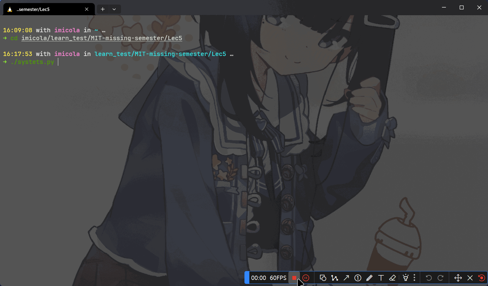

当我们在学习这一门课程的时候，我们是否发现自己都在一个进程中进行工作，而有的时候我们需要更好的工作，就需要对多个命令和进程之间进行协调
在这一节中我们将学习一些改善我们工作流与体验的操作思想
进程控制
某些情况下我们需要中断正在执行的任务，比如当find在递归搜索一个非常大的目录的时候，大多数情况下，我们都可以使用 Ctrl-c 来停止命令的执行
但是在有的时候，会无法结束进程，这需要我们去深入探讨其底层原理
结束进程
我们的shell在结束一个进程的时候，通常都是发送一个信号来 “通知” 进程结束，这个进程接受到这个信号后会做出一系列反应。就这一点而言，信号是一直 软件中断
在上面的例子中，我们按下 Ctrl-C 时候，shell会发送一个SIGINT信号到进程
当我们知道了进程信号，也就有规避信号的方法

这个systest.py 接收 SIGINT 但没有终止程序
#!/usr/bin/env python
import signal, time
def handler(signum, time):
print("\nI got a SIGINT, but I am not stopping")
signal.signal(signal.SIGINT, handler)
i = 0
while True:
time.sleep(.1)
print("\r{}".format(i), end="")
i += 1而是在我们使用 Ctrl + \ 发送另外的指令 SIGQUIT才将这个程序退出
当然为了优雅的退出程序，我们有一个更通用的退出信号 SIGTERM ，而发出这个信号需要我们使用 kill 命令
暂停和后台执行进程
当然，信号可以做的事情不只是终止进程，也可以让进程做其他事情，比如当我们输入 Ctrl-Z 时候shell会发送 SIGSTOP 信号，这个信号会让进程暂停并退出到终端界面
使用 fg 和 bg 指令可以恢复命令暂停的工作，他们分别表示在前台继续或在后台继续
jobs命令会列出当前终端会话中尚未完成的全部任务。我们可以使用pid来引用这些任务，(也可以使用pgrep命令找出pid)。更加符合直觉的是，你可以使用 % + 任务ID 来选取任务，而jobs会打印任务编号
如果我们想直接让任务在后台运行，我们可以使用 & 后缀，过它此时还是会使用 shell 的标准输出，这一点有时会比较恼人(可以搭配重定向使用)
同时，让已经在运行的程序转入后台,我们可以键入 Ctrl-Z 然后紧接着输入 bg 就可以,但是注意这时候我们关闭终端，所有的后台程序都会被终止，因为这些程序本质是终端的子程序
我们可以使用 nohup 命令规避这一点
对于更多的关于信号的说明可以查看Wikipedia的条目Unix信号
终端多路复用
课程上说使用 tmux 终端多路复用来提高效率，我的评价是不如使用Window Terminal分页
tmux 的快捷键需要我们掌握，它们都是类似 <C-b> x 这样的组合，即需要先按下 Ctrl+b，松开后再按下 x。tmux 中对象的继承结构如下：
-
会话 - 每个会话都是一个独立的工作区，其中包含一个或多个窗口
tmux开始一个新的会话tmux new -s NAME以指定名称开始一个新的会话tmux ls列出当前所有会话- 在
tmux中输入<C-b> d，将当前会话分离 tmux a重新连接最后一个会话。您也可以通过-t来指定具体的会话
-
窗口 - 相当于编辑器或是浏览器中的标签页，从视觉上将一个会话分割为多个部分
<C-b> c创建一个新的窗口，使用<C-d>关闭<C-b> N跳转到第 N 个窗口，注意每个窗口都是有编号的<C-b> p切换到前一个窗口<C-b> n切换到下一个窗口<C-b> ,重命名当前窗口<C-b> w列出当前所有窗口
-
面板 - 像 vim 中的分屏一样，面板使我们可以在一个屏幕里显示多个 shell
<C-b> "水平分割<C-b> %垂直分割<C-b> <方向>切换到指定方向的面板，<方向> 指的是键盘上的方向键<C-b> z切换当前面板的缩放<C-b> [开始往回卷动屏幕。您可以按下空格键来开始选择，回车键复制选中的部分<C-b> <空格>在不同的面板排布间切换
只能说不愧是上古时代的产物，快捷键比我命多
别名
当我们有一些特别常用的命令但是又特别长的时候，会非常麻烦。因此，大多数终端都支持设置别名
alias alias_name="command_to_alisa arg1 arg2"Note
=两边是没有空格的，因为alias是一个命令，只一个参数
配置文件
在linux内，很多程序的配置都是以纯文本的被称为 点配置 的文件来完成，如 zsh -> ~/.zshrc vim -> ./vimrc
shell的配置也是通过这些文件来完成的，在我们启动时候，我们的shell程序会读取很多加载文件来完成加载
对 bash 而言，在大多数系统下我们可以编辑 .bashrc 或 .bash_profile 来进行配置，在这些文件中我们可以添加需要在启动时候执行的命令，例如别名或我们的环境变量
实际上，很多程序都会要求你在 shell 的配置文件中包含一行类似 export PATH ="$PATH:/path/to/progtam/bin"的命令
Important
这种做法在现代高度自动化的软件包管理器下，已经变得十分少见，当包管理器被打包时候，打包者会处理安装细节，在安装包的时候就将软件安装在shell的环境变量路径下并处理所有依赖问题
配置文件应该如何管理呢？
这里推荐一种高效且支持同步的方法: "dotfiles"管理具体做法是将所有的配置文件集中储存在一个 Git 仓库中，然后通过脚本编写的符号链接将他们部署到正确的位置
为什么推荐这么做？
主要是版本控制，同步，上云，自动化部署，这些都会在 Git 章节讲述
这时有人可能会有疑惑，文字形式的配置文件，那里面应该放些什么？可以放什么？
对于这种问题，一般而言，我们可以通过在线文档或帮助手册来获取，当然我们可以在网上搜索特定程序的文章，有些作者会分享他们的配置。当然作为c-v程序员最快速的方法是在 GitHub 上搜索别人的 dotfile 仓库并且获取，当然我不建议你直接复制别人的文件拿来用
可移植性
可见文件的一个常见痛点就是可能没办法在多设备上生效
当然我们可以为部署脚本下功夫来完成我们的多配置，比如书写两份 .vimrc 分别对应 Linux 和 Windows
我们的shell脚本就可以长这样
if [[ "$(uname)" == "Linux" ]]
then {
command
} fi